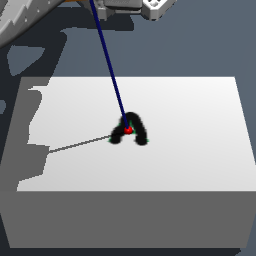
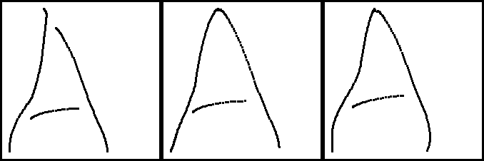

Michael Hakizumwami
Software engineer — Dallas, TX
Platform engineering at Capital One by day; robot post-training and production agents by night. Looking for forward-deployed / applied-AI work at a small, fast company.
Selected work
Robot Handwriting VLA
Taught an SO-ARM101 arm to write. MuJoCo + PPO curriculum (0.93–0.97 success), LoRA post-training of π0.5 (3B VLA), then a GRPO-style RL loop that beat the SFT ceiling 2× — ~$7/iteration on Modal.


kmj.partners
Conversational outreach platform for creator clients: FastAPI/Postgres, self-hosted quantized LLM inference on 4090s. ~500K personalized touchpoints; 8-person team, $600K revenue.
Artifactory platform @ Capital One
CI/CD + artifact distribution for 600+ apps bank-wide: cross-account production migration with live federation sync, 24/7 on-call.
Activity
Stack
Python · TypeScript · Go · FastAPI · React/Vue · AWS · Kubernetes · Postgres · Modal · MuJoCo/JAX